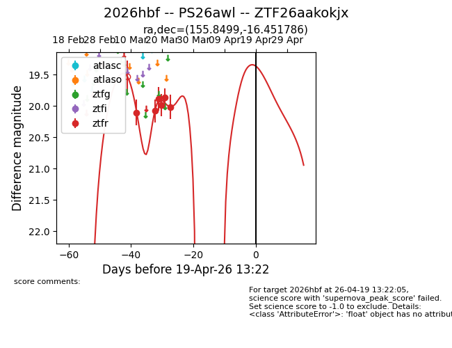
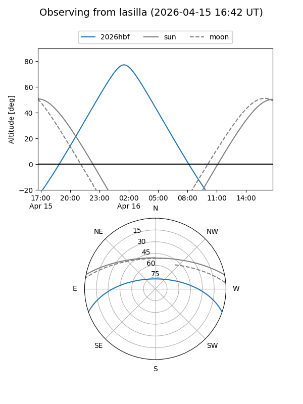
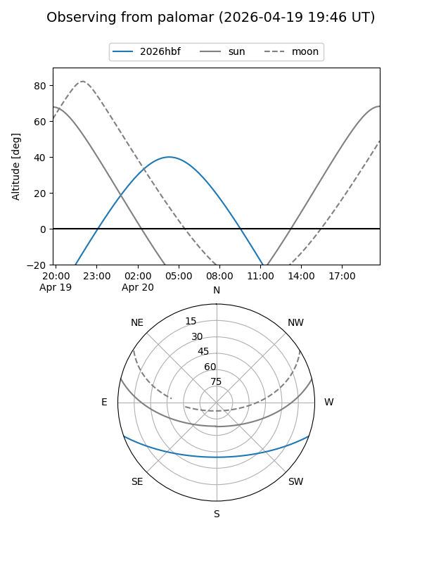
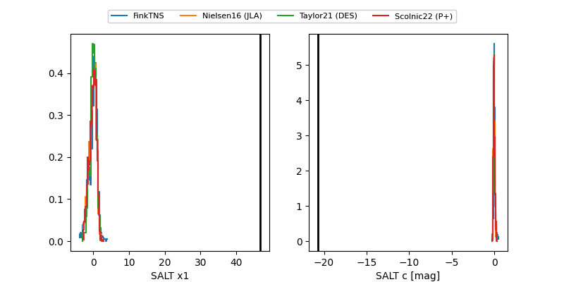

2026hbf
Target 2026hbf at 2026-04-19 13:33
Aliases and brokers:
FINK: link
Lasair: link
ALeRCE: link
TNS: link
YSE: link
alt names
ZTF26aakokjx (ztf,fink_ztf)
2026hbf (tns,yse)
PS26awl (panstarrs)
Coordinates:
equatorial (ra, dec) = 155.8499,-16.45179
equatorial (HMS+DMS) = 10:23:23.99,-16:27:06.43
galactic (l, b) = (259.0966,+33.53538)
Flags:
Photometry:
last ztfr=20.02
6 ztfr detections
Lightcurve

Visibility


Additional plots
